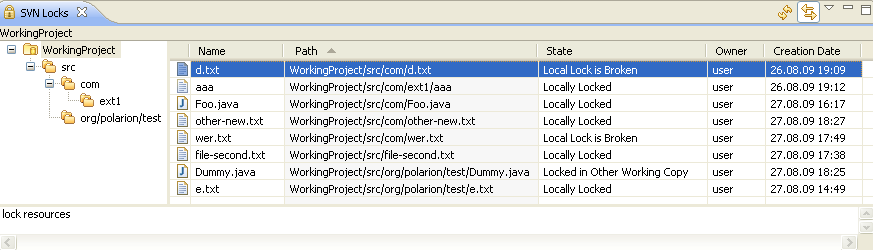

|
|
|
 'SVN Locks View' provides a probability to view SVN® Locks for files. Its default location is 'SVN Repository Exploring Perspective'.
'SVN Locks View' provides a probability to view SVN® Locks for files. Its default location is 'SVN Repository Exploring Perspective'.
This is how 'SVN Locks View' looks like:
Toolbar
Refresh - redraws the view refreshing the information on SVN® Locks of the resource.
Link with Editor and Selection - shows in the view information on SVN® Locks of the selected or actively editing resource.
Pop-up menu
Refresh - redraws the view refreshing the information on SVN® Locks of the resource.